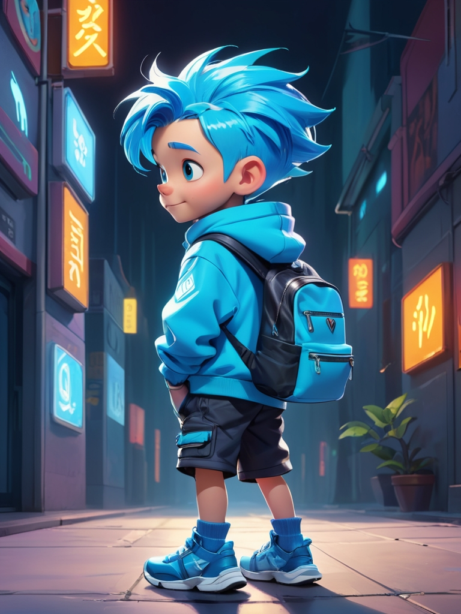
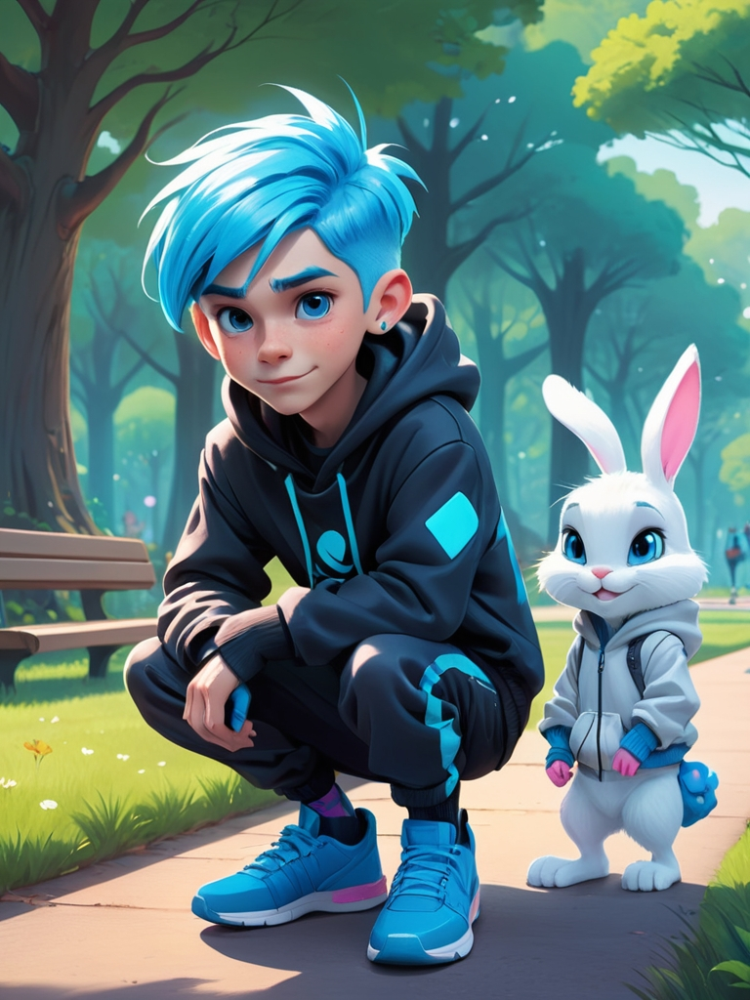
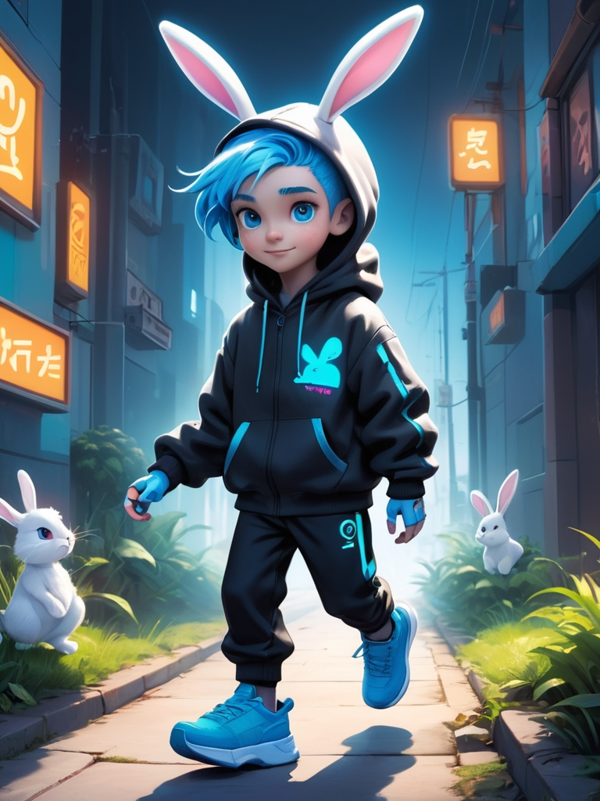
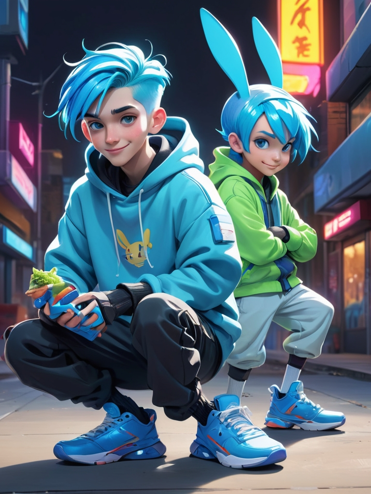
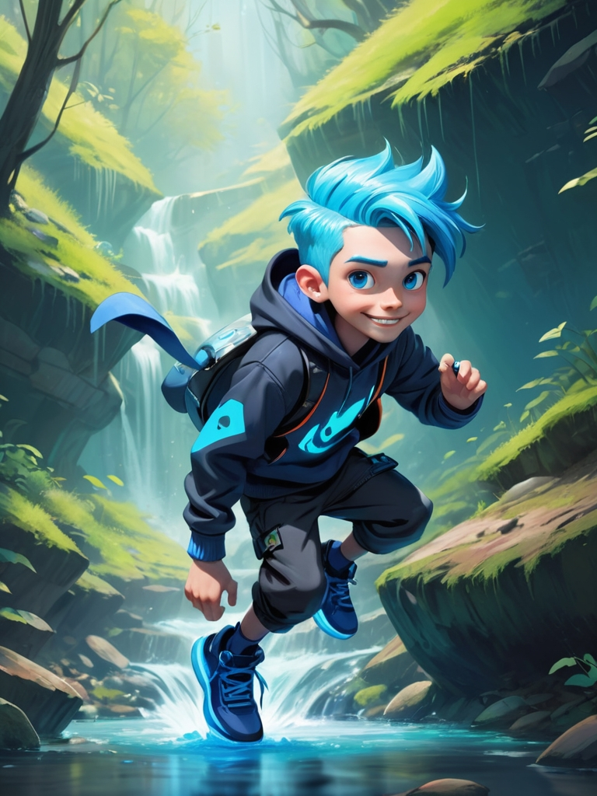
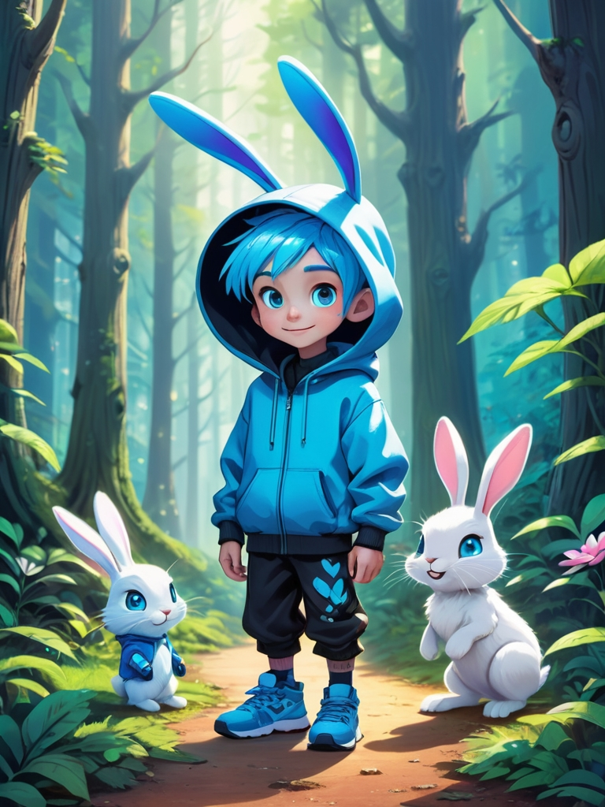
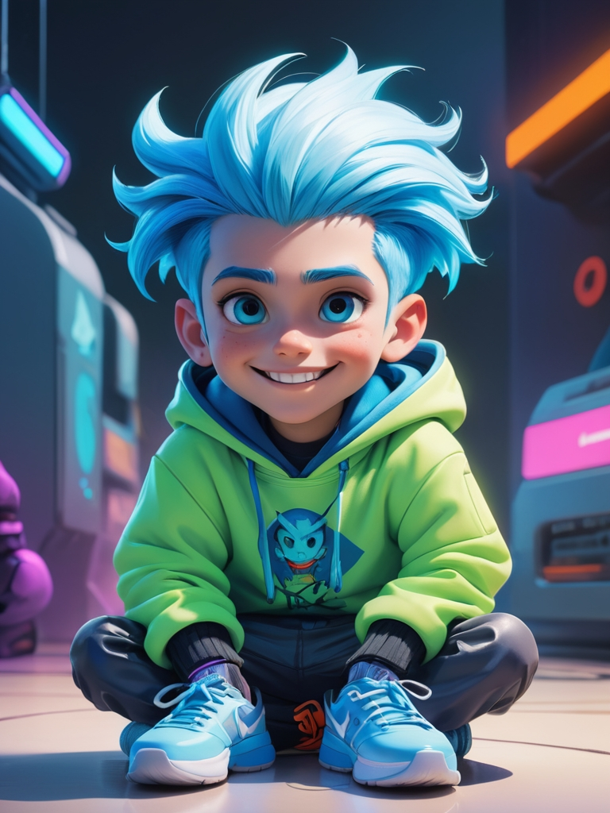
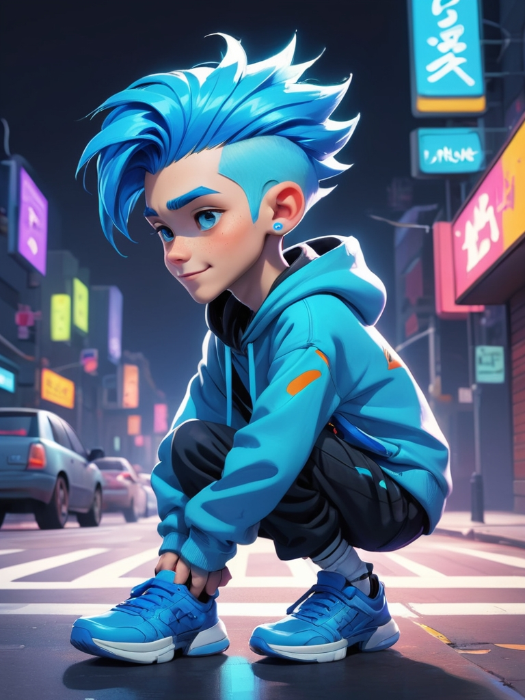
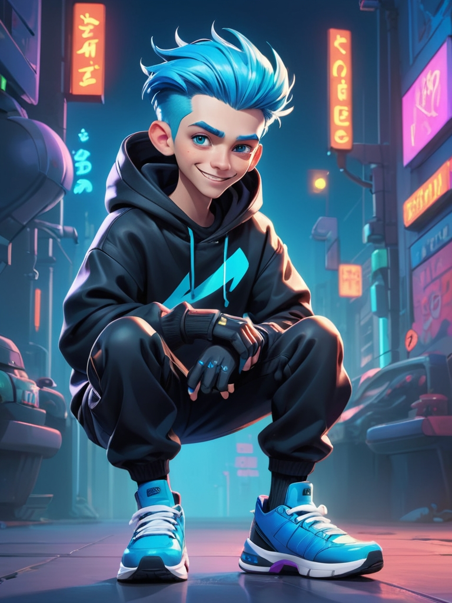
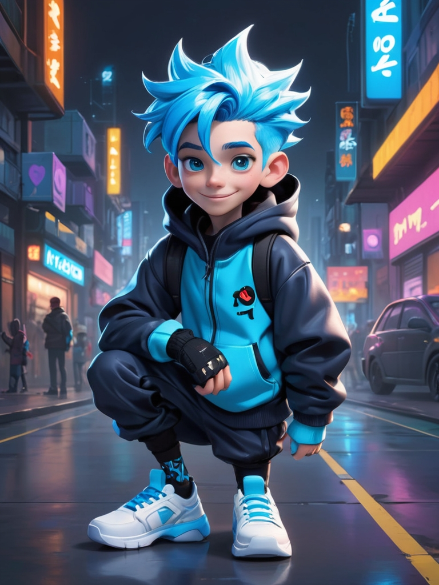

1. Simon Prepares for the Adventure
Simon is a curious child, and today he decided to go on an adventure. He packed his backpack and was ready for a new day of exploring.

2. Simon Meets the Lost Bunny
In the park, Simon found a lost bunny. The bunny looked sad, so Simon decided to help it find its way home.

3. They Work Together to Find the Way
Simon and the bunny started walking around, looking for a way back home. Simon listened carefully to the sounds around him and discovered a small path. The bunny hopped happily along.

4. Simon Decides to Share His Food
After walking for a while, Simon felt hungry, so he took out his food. Even though he didn't have much, he decided to share it with the bunny.

5. They Arrive at the Beautiful Forest
Simon and the bunny walked into a beautiful forest, with tall trees and fragrant flowers. Simon admired the beauty of nature and decided to be careful to protect the plants and animals.

6. Simon Bravely Crosses the Creek
Ahead, there was a small creek. Simon felt a bit scared, but he gathered his courage and jumped over the creek, successfully reaching the other side.

7. He Meets a Fallen Friend
At an intersection, Simon saw a friend who had fallen down. He immediately ran over to help, picking up the friend and comforting them.

8. Simon Learns to Listen to Others' Thoughts
He sat down and talked with the other children, listening to their ideas. Simon learned how important it is to listen to others' thoughts and opinions.

9. Simon Makes a New Friend
At the end of the adventure, Simon met a new friend. They played together and spent a wonderful day having fun.

10. Simon Returns Home and Shares His Adventure
At the end of the day, Simon returned home and excitedly shared his adventure with his family. He felt very happy and had learned so many new things.
